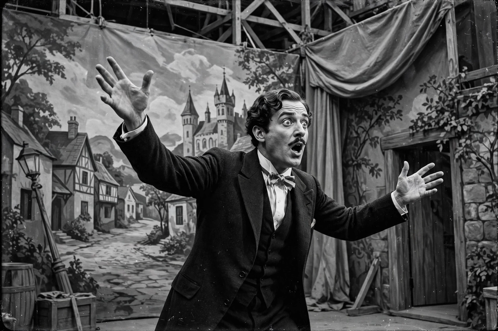

Wikipedia — The Free Encyclopedia

A silent film is a film with no synchronised recorded sound (or more generally, no audible dialogue). Though silent films convey narrative and emotion through title cards, pantomime and live musical accompaniment, the technology to record synchronised dialogue only became practical in the late 1920s. The silent era, roughly from 1894 to 1929, produced many of cinema's foundational works and techniques.
Silent films were rarely shown in silence. Even small cinemas employed a pianist or organist, and large picture palaces had orchestras playing scores compiled or composed for the film; in Japan, benshi narrators performed the dialogue live. Actors used emphatic gesture and facial expression, and intertitles supplied dialogue and exposition. Films were often shown at speeds slower than the modern 24 frames per second and were frequently tinted or toned in colour. Performers such as Charlie Chaplin, Buster Keaton and Lillian Gish, and directors from D. W. Griffith to Sergei Eisenstein, F. W. Murnau and Fritz Lang, raised the medium to high art in works like The Gold Rush, Battleship Potemkin, Metropolis and Sunrise.
The release of The Jazz Singer in 1927, with its synchronised dialogue sequences, began the rapid conversion to sound; by 1930 the silent feature was essentially extinct in the West, though Chaplin continued with City Lights (1931) and Modern Times (1936). Because nitrate film decays and was recycled or neglected, a large majority of silent features are lost; archives and restorations have recovered what survives, and modern releases reconstruct original scores and projection speeds.